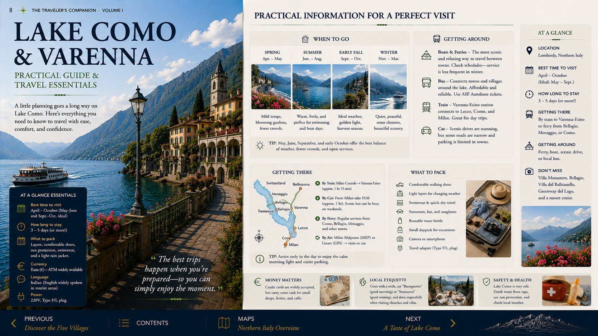
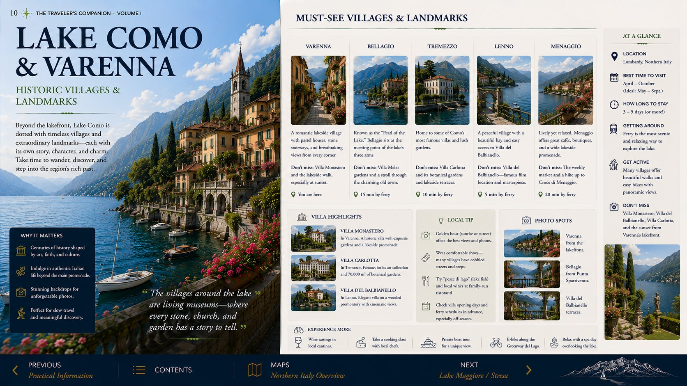

Your lakefront apartment
Lake Front Apartment Lenno
Via Alla Torre 9 in Tremezzina places you in one of Lake Como’s most useful locations: close to the Lenno waterfront, the Greenway and Villa del Balbianello.
Verified reservation3 nightsEntire apartmentHosted by Benedetta
Arrival concierge
Arrive once. Settle in properly.
Lenno rewards an unhurried arrival. Complete the required guest registration before the first day, keep the host’s WhatsApp entry message available offline, and avoid committing to a ferry excursion until after check-in.
Before departure
Complete the Vikey guest registration for all four travelers. Save passports and confirmation details where they are easy to reach.
Day before arrival
Watch for Benedetta’s WhatsApp instructions. Screenshot the building entrance, key procedure and any parking directions.
On arrival
Unload only where legal, settle luggage, then confirm your overnight parking arrangement before exploring the waterfront.
Around your apartment
Your Lenno essentials.
These shortcuts open live map results so you can choose what is open when you arrive.
TransportLenno ferry dockYour gateway to Bellagio and the central lake.Arrival essentialGroceriesStock breakfast, water and aperitivo supplies before evening.PracticalPharmacyLive directions and current opening hours.First eveningWaterfront dinnerChoose a relaxed table near the lake rather than driving again.
Signature day
The perfect day from Lenno.
A complete Lake Como experience without wasting time crossing and recrossing the lake.
- 8:00Coffee and the waterfront
Begin slowly in Lenno while the lake is calm and the promenade is quiet.
- 9:00Villa del Balbianello
Go early. Walk when conditions suit, or use the local boat option to reduce effort.
- 12:30Lunch in Lenno
Return to the village before the hottest and busiest part of the afternoon.
- 14:30Ferry to Bellagio
Use the crossing for scenery, then focus on the waterfront, lanes and one excellent stop.
- 18:00Return before dinner
Be back on the western shore before the final practical return becomes stressful.
- 19:30Aperitivo and dinner
Finish within walking distance of the apartment.
Ferry companion
Use the lake, but respect the timetable.
Confirm the official schedule for September 2026 when it is published. Photograph the day’s return departures before boarding.
Lenno → Bellagio
The most useful excursion crossing. Build one afternoon or full day around it rather than stacking multiple distant stops.
Official timetableLenno → Varenna
Best as a deliberate destination for Villa Monastero and the waterfront, not a rushed add-on after Bellagio.
Western shore day
Villa Carlotta, Tremezzo and the Greenway can be combined mostly on your side of the lake, reducing ferry dependency.
Three-night rhythm
A plan that fits your actual stay.
Arrival evening plus two full days gives you enough time for both the western shore and one central-lake excursion.
Thursday · Sept 3
Arrival and Lenno
- 3:00 PMCheck in, confirm parking and unpack.
- Late afternoonWalk the waterfront and locate the ferry dock.
- EveningGroceries, aperitivo and dinner nearby.
Friday · Sept 4
Balbianello and Bellagio
- MorningVilla del Balbianello before peak traffic.
- AfternoonFerry to Bellagio for lunch and exploration.
- EveningReturn to Lenno with margin before the last boat.
Saturday · Sept 5
Western shore
- MorningGreenway del Lago or Villa Carlotta.
- AfternoonTremezzo, Menaggio or relaxed apartment time.
- EveningFinal lakefront dinner and pack for departure.
First evening
Keep the car parked.
Your best introduction to Lenno is deliberately simple: settle in, learn the waterfront and enjoy the advantage of staying on the lake.
- After check-inApartment orientation
Confirm keys, Wi-Fi, trash procedures and departure requirements.
- Golden hourLenno waterfront
Walk without an agenda and note the ferry dock for tomorrow.
- AperitivoLake view and a spritz
Choose the atmosphere rather than chasing a famous address.
- DinnerStay local
Finish close to home so the first night feels restorative.
Lake Como visual guide
Selected spreads
Tap any image to enlarge it.


